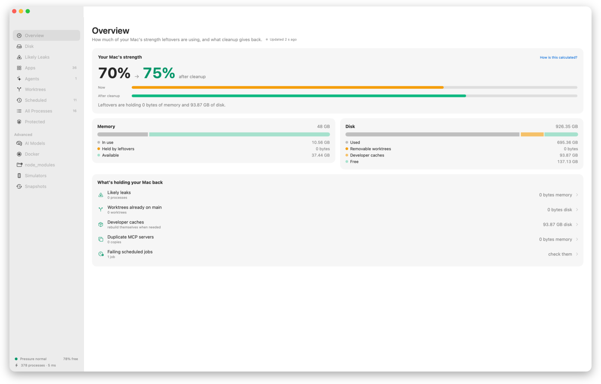

How strong is your Mac right now?
Leftovers gives your Mac a score. It shows the score now, and the score after a clean up. On the Mac where we built it, the score went from 41% to 68%.
The math is simple, and you can see it with one click.
